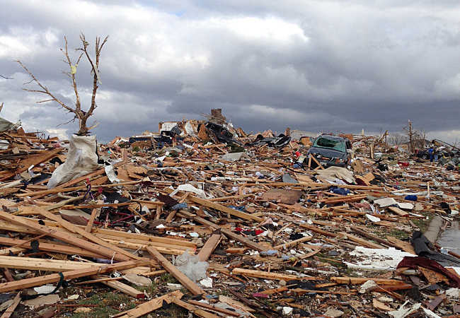

Two years later: Franklin continues to rebuild after 2016 Tornado

It’s been two years since an EF-4 tornado left a scar on the city of Franklin. The images of destroyed businesses and homes still linger in residents’ consciousness, a reminder of the pain and heartache left in the storm’s destructive path.
Two years later, officials say they are impressed with how the city has recovered since that fateful November day. According to Jon Oliphant, Washington’s planning and development director, around 90 percent of the homes destroyed in the tornado have either been rebuilt or are in the process of being rebuilt.
Immediately following the tornado, Oliphant said, he and other city officials weren’t entirely sure whether displaced residents would return to Washington after settling in surrounding communities. “Just the fact that the time of year when it happened, in the middle of November, and then we had a terrible winter the following (months), we weren’t really sure as to how many of those folks were going to come back,” Oliphant said. “I don’t know if we have a firm grasp on it, but I would estimate that probably 80-85 percent of the homes that have been rebuilt are from the original owners; certainly a large percentage of those are the original residents.” A speedy rebuilding, Oliphant said, has further helped the city avoid taking drastic measures from an economic standpoint.